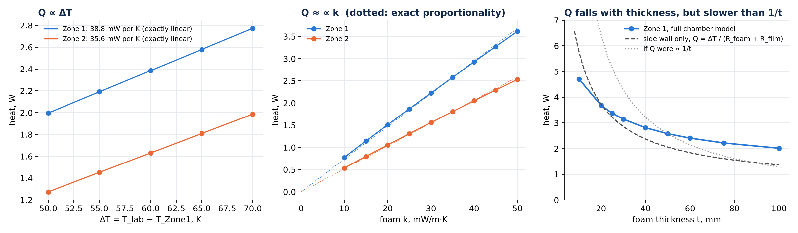
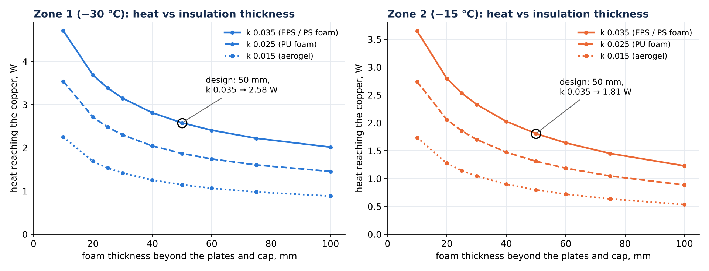
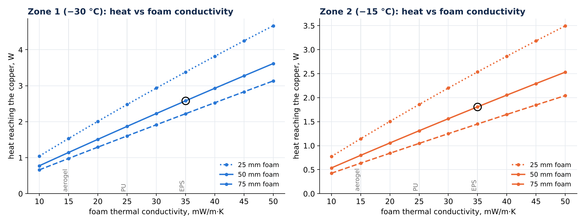
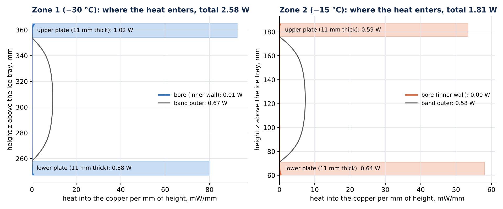
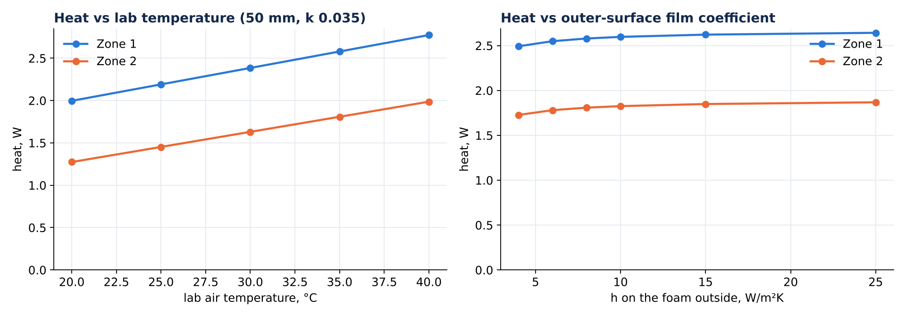
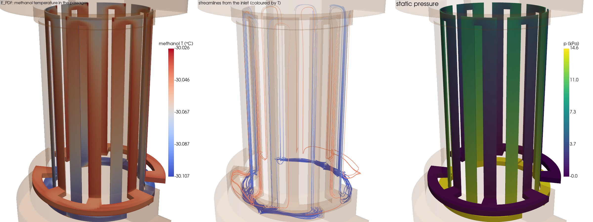
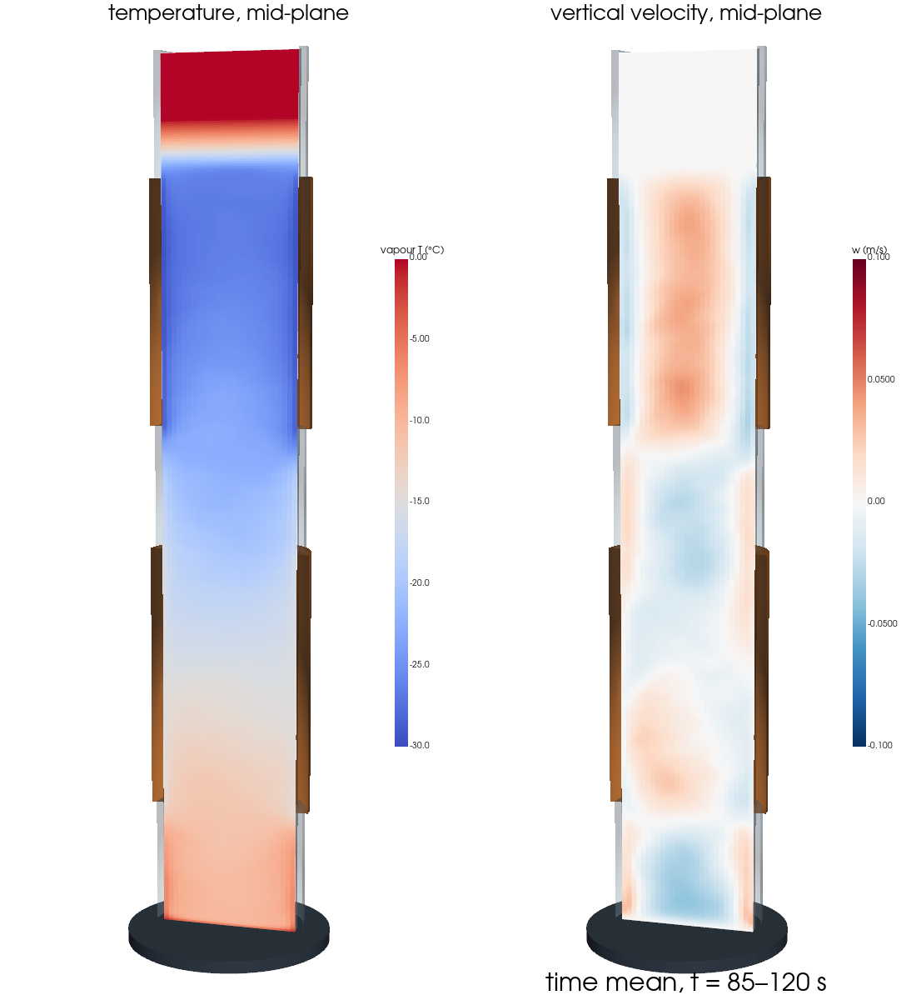
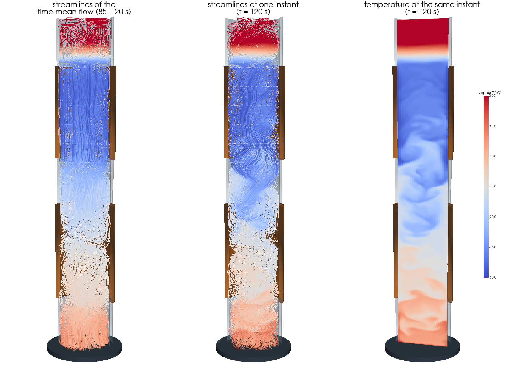

What was done, what it shows, the heat-loss equations and sweeps, and the questions you are likely to be asked, with answers.
Companion to the presentation “SAHA cold stage: thermal design of the cold zones” · 7 Oct 2026
2.74 W
heat into Zone 1 (−30 °C) with the moving vapour; 2.58 W by conduction alone
1.75 W
heat into Zone 2 (−15 °C) with the moving vapour; 1.81 W by conduction alone
11 / 11
coil layouts hold the inner wall within ±0.15 K at 17.5 and 5 g/s
≥ 94 mK
margin left inside the ±0.15 K band, worst layout and flow
Design basis: 50 mm foam (k 0.035), 35 °C lab, Zone 1 inlet ≈ −30.15 °C at 17.5 g/s (≈ −30.3 °C at 5 g/s). Flattest wall: B and E_PDF.
1 · What was done, step by step
Step
What was done
Result and meaning
Geometry
All drawings, the sleeve PDF and the Fluent vapour mesh read and cross-checked.
One consistent chamber: 425 mm stack, Zone 2 copper z 60–187 mm, Zone 1 z 247–365 mm, 27 mm bore (the “30 mm bore” in the sleeve PDF is the neck outside diameter). Zone 1 copper heat capacity 634 J/K. The Fluent mesh passes the mesh check.
Heat load
Axisymmetric conduction model of the whole stack (vapour, Perspex, foam, copper at set point, lab 35 °C with h = 8 W/m²K, ice tray 0 °C). Grids 0.25 / 0.5 / 1.0 mm.
Zone 1 2.579 W, Zone 2 1.809 W; 74 % of Zone 1’s heat enters through the copper end plates. Grid-independent to 0.2 %.
Heat-load sweeps
Foam thickness 10–100 mm (3 foams), foam k 0.010–0.050 (3 thicknesses), lab temperature 20–40 °C, outer film 4–25 W/m²K, heat entry along the height.
Section 2. Heat is proportional to the temperature difference and close to proportional to foam k; it falls with thickness but more slowly than 1/t.
Radiation
Gray-body model of the bore with exact view factors (ε copper 0.3).
37 mW into Zone 1: about 1.4 % of the load. Left out of the CFD (your decision); to be added in the detailed runs.
Coil layouts
3-D finite-volume copper zone (r, θ, z; 1.3–1.9 M cells) with every passage built in, plus a 1-D coolant network that warms along the path. 11 layouts × 2 flows = 22 cases. Coil–buffer joint taken as ideal (your decision).
Every layout holds ±0.15 K. Ranking: B, E_PDF, E flattest (42–45 mK at 17.5 g/s), A* as built widest (101 mK). Six-panel result sheet per case.
Corrections on the way
Model bugs found and fixed before the results above.
Contact resistance was wrongly applied across the A* plates; the jacket H film used the wrong hydraulic diameter; the E lanes were too short; three layouts had voxel gaps at a join (z = 91 mm). All fixed and re-run.
Coolant CFD
Coarse 3-D laminar Navier–Stokes of the methanol in the passages, then one coupled heat solve with the copper. Layouts E_PDF, B, A, P, H at both flows, plus A* and C at 17.5 g/s.
Spreads within ~5 mK of the network model for the coils; E_PDF Δp 14.3 kPa. The jacket H is less uniform in 3-D (78 vs 69 mK) because its rings are fed from one side. Numerical fixes needed: second-order upwinding, RK2 time stepping, a viscous time-step limit, a local pressure step.
Vapour column, run 1
Transient 3-D Boussinesq CFD of the R134a column, 1 mm grid, 0.24 M cells; walls from the room model. 0–60 s one-way, then face-by-face two-way exchange.
Clean to about 85 s (Zone 1 ≈ 175 mW), then the face-level exchange ran away (cells at 63–126 °C, impossible). States up to 75 s kept.
Vapour column, run 2
Exchange through the full room admittance.
Amplified face-to-face noise about 145×; discarded.
Cap
Adiabatic cap tried at your request, then reverted.
The cap stays a Robin (room-coupled) boundary.
Vapour column, run 3
Same exchange applied on smooth ~10 mm bands with relaxation 0.5, restarted from the clean t = 75 s state (not from zero), run to 120 s.
Stable. Means over 85–120 s: Zone 1 wall takes 172 ± 2.5 mW from the vapour; Zone 1 total 2.737 W, Zone 2 1.748 W.
Vapour figures
Mid-plane fields, 3-D views, streamlines of the mean flow and of one instant, the 0–120 s animation and its time-mean frame.
One slow overturning loop from the ice tray up to Zone 1; the coupled Perspex walls run 2.4–2.8 K colder than with still vapour.
Vapour → coils
Time-mean vapour heat map on the Zone 1 bore added to the coil model.
Spread +0 to +2.5 mK, required inlet 9–19 mK colder. Every coil still holds ±0.15 K.
Presentation
Detailed deck (97 slides) and a short deck (30 slides) in the style of the earlier SAHA decks; GIFs slowed to readable speed.
Short deck is standalone (no comparison language).
2 · Heat loss: equation, proportionality and sweeps
The heat-loss equation
Q = ΔT / Rtotal with ΔT = Tlab − Tcopper
Resistances of the layers in series add: Rtotal = Rfilm + Rfoam + RPerspex + …
Parallel paths (side wall, end plates, connectors, top) add as conductances: 1/Rtotal = Σ 1/Ri
Plane layer (end plates, top): Rfoam = t / (k A) → Q = k A ΔT / t (Fourier’s law)
Cylindrical layer (side wall): Rfoam = ln(ro/ri) / (2π k L)
Outer surface film: Rfilm = 1 / (h Ao) = 1 / (h · 2π ro L)
Side wall of Zone 1: Q = ΔT / [ ln(ro/ri)/(2π k L) + 1/(2π ro L h) ] ri = 43 mm (plate rim), ro = ri + t, L = 118 mm (Zone 1) or 127 mm (Zone 2), k = 0.035 W/m·K, h = 8 W/m²K, ΔT = 65 K (Zone 1) or 50 K (Zone 2). This side-wall-only formula gives 2.06 W for Zone 1 at 50 mm. The full chamber model gives 2.58 W: the other 0.52 W comes through the ends, plates and the Perspex/vapour paths.
Heat loss is proportional to … and inversely proportional to …
Quantity
Relation
Why (from the equation)
What the full model shows
Temperature difference ΔT = Tlab − Tcopper
directly ∝
Q = ΔT / R
Exactly linear: 38.8 mW per K (Zone 1), 35.6 mW per K (Zone 2). Lab 30 → 40 °C: 2.39 → 2.77 W.
Foam conductivity k
directly ∝ (almost)
Rfoam ∝ 1/k
Q/k drops only about 7 % from k 0.010 to 0.050: the film resistance becomes a larger share at high k. PU (0.025) −27 %, aerogel (0.015) −56 %.
Area: zone height L, radius
directly ∝
R ∝ 1/A ∝ 1/L
The side-wall heat is per unit height (section 2, height plot); a taller zone draws proportionally more.
Falls more slowly than 1/t: 10 → 100 mm (10×) only cuts Zone 1 from 4.71 to 2.02 W (2.3×). The cylinder’s ln grows slowly, and the Perspex/vapour/ice-tray paths do not pass through the foam.
Total thermal resistance R
inversely ∝
Q = ΔT / R
Everything above acts through R.

Left: heat against ΔT, exactly linear. Middle: heat against foam k at 50 mm; the dotted line is exact proportionality through zero. Right: heat against thickness: full model, the side-wall formula above, and a pure 1/t law through the design point.
Heat loss against insulation thickness

Foam thickness beyond the copper plates (radial) and above the cap (axial), changed together; lab 35 °C, h 8 W/m²K. Circle: the design point.
Foam thickness, mm
k 0.035 (EPS): Z1 / Z2, W
k 0.025 (PU): Z1 / Z2, W
k 0.015 (aerogel): Z1 / Z2, W
10
4.71 / 3.65
3.54 / 2.74
2.25 / 1.74
20
3.68 / 2.80
2.71 / 2.06
1.69 / 1.27
25
3.38 / 2.54
2.48 / 1.86
1.53 / 1.14
30
3.15 / 2.33
2.30 / 1.70
1.42 / 1.04
40
2.81 / 2.03
2.04 / 1.47
1.26 / 0.90
50
2.58 / 1.81
1.87 / 1.31
1.15 / 0.80
60
2.41 / 1.64
1.74 / 1.19
1.07 / 0.72
75
2.22 / 1.45
1.60 / 1.05
0.98 / 0.63
100
2.02 / 1.23
1.45 / 0.88
0.89 / 0.54
Heat loss against foam thermal conductivity

Three foam thicknesses; lab 35 °C, h 8 W/m²K. Circle: the design point (50 mm, k 0.035).
Foam k, W/m·K
25 mm: Z1 / Z2, W
50 mm: Z1 / Z2, W
75 mm: Z1 / Z2, W
0.010
1.04 / 0.77
0.78 / 0.54
0.66 / 0.43
0.015
1.53 / 1.14
1.15 / 0.80
0.98 / 0.63
0.020
2.01 / 1.51
1.51 / 1.06
1.29 / 0.84
0.025
2.48 / 1.86
1.87 / 1.31
1.60 / 1.05
0.030
2.93 / 2.20
2.23 / 1.56
1.91 / 1.25
0.035
3.38 / 2.54
2.58 / 1.81
2.22 / 1.45
0.040
3.82 / 2.86
2.93 / 2.05
2.53 / 1.65
0.045
4.25 / 3.18
3.27 / 2.29
2.83 / 1.85
0.050
4.67 / 3.49
3.62 / 2.53
3.13 / 2.04
Heat loss along the height (length) of each zone

Heat into the copper per mm of height, design case. Bars: the two 11 mm end plates (most of the heat). Grey: the outer face of the copper band. Blue/orange line: the bore. With still vapour almost no heat comes through the bore; the moving vapour adds 172 mW there (section 5).
Zone 1: plates 1.90 W (lower 0.88, upper 1.02), band outer face 0.67 W, bore 0.01 W. Zone 2: plates 1.23 W, band 0.58 W. The plates sit where the foam path to the lab is shortest and the plate area is largest, so the coil must remove most of its heat near the two ends of each zone. That is why the wall maps are warm at the ends and cold in the middle.
Lab temperature and outer film coefficient

50 mm, k 0.035. The film coefficient matters little because the foam dominates the resistance.
Inner copper wall of Zone 1, unrolled (angle × height), for all 11 layouts at 17.5 g/s. Colour: wall temperature minus −30 °C, mK.
Layout
Spread, mK 17.5 / 5 g/s
Centring inlet, °C 17.5 / 5 g/s
Allowed inlet window, °C 17.5 g/s
Δp friction, kPa 17.5 / 5 g/s
Min margin, mK
A* as built: bifilar tube on buffer
101 / 112
-30.149 / -30.305
-30.25 to -30.05
32.1 / 5.5
94
P plain helix
72 / 95
-30.118 / -30.273
-30.23 to -30.00
29.9 / 5.1
102
A folded helix (bifilar)
60 / 69
-30.120 / -30.285
-30.24 to -30.00
28.9 / 4.9
116
B two radial layers
42 / 61
-30.085 / -30.247
-30.21 to -29.96
62.9 / 10.7
120
C opposite-end feeds
58 / 57
-30.143 / -30.314
-30.26 to -30.02
5.4 / 0.9
121
D axial serpentine
51 / 53
-30.681 / -30.767
-30.81 to -30.56
6.7 / 1.9
124
E paired axial sleeve
45 / 54
-30.138 / -30.262
-30.27 to -30.01
10.6 / 3.0
123
E_PDF paired sleeve (sleeve drawing)
43 / 53
-30.138 / -30.262
-30.27 to -30.01
10.7 / 3.1
124
F stacked ring channels
64 / 67
-30.295 / -30.500
-30.41 to -30.18
0.3 / 0.1
116
G two short folded coils
55 / 59
-30.154 / -30.334
-30.28 to -30.03
4.6 / 0.8
120
H full annular jacket
69 / 93
-30.128 / -30.241
-30.24 to -30.01
1.2 / 0.4
103
Spread = max − min of the inner-wall temperature. Centring inlet = the inlet temperature that puts the wall’s mid-range at −30 °C. Window = the inlet range that keeps every point within −30 ± 0.15 °C. Δp is straight-pipe friction only (bends, fittings and manifolds add to it). Methanol at −30 °C: ρ 840 kg/m³, cp 2286 J/kg·K, μ 1.43 mPa·s, Pr 15.5.
4 · Coolant flow in 3-D

E_PDF at 17.5 g/s: methanol temperature in the passages, streamlines from the inlet, static pressure.
Layout
Spread, mK 17.5 / 5 g/s
Centring inlet, °C 17.5 / 5 g/s
Methanol warming, mK
Peak speed 17.5 g/s, m/s
E_PDF paired sleeve (sleeve drawing)
37 / 56
-30.107 / -30.253
65 / 224
2.88
B two radial layers
40 / 60
-30.096 / -30.244
66 / 223
4.28
A folded helix (bifilar)
60 / 69
-30.145 / -30.267
69 / 225
3.48
P plain helix
71 / 98
-30.143 / -30.257
66 / 229
3.03
H full annular jacket
78 / 96
-30.144 / -30.270
64 / 226
1.64
A* as built: bifilar tube on buffer
102 / –
-30.168
69
3.98
Grid 0.4 mm in r and z, 2° round; thin channels refined (0.125 mm E lanes, 0.25 mm H gap). Walls are voxel stair-steps, so helix pressure drops from this CFD are upper bounds; temperatures and flow paths are the reliable output.
5 · Vapour column (0–120 s, two-way coupled, no radiation)

Time mean, 85–120 s: mid-plane temperature and vertical velocity (radius drawn ×2.5).

Streamlines of the mean flow, of the instant t = 120 s, and the temperature at that instant.
Heat flow (means 85–120 s)
mW
Region
Mean T, °C
rms, K
Ice tray → vapour
49
lower connector
−9.5
1.5
Lower Perspex connector → vapour
53
Zone 2 (wall −15)
−15.2
1.4
Middle Perspex connector → vapour
52
middle connector
−20.9
2.3
Vapour → Zone 1 wall
172 ± 2.5
Zone 1 (wall −30)
−26.6
1.0
Zone 2 wall → vapour
18
top region
−0.8
0.4
Totals with the moving vapour: Zone 1 2.737 W (2.565 W room-side conduction + 0.172 W from the vapour) and Zone 2 1.748 W. Vertical velocity 0.03 m/s rms, peak about 0.3 m/s. Coupling cools the connector Perspex walls by 2.4 K (lower) and 2.8 K (middle).
6 · Questions you are likely to be asked
Heat load and insulation
How much heat does each zone need to remove?
Zone 1 (−30 °C): 2.58 W by conduction, 2.74 W with the moving vapour column. Zone 2 (−15 °C): 1.81 W, 1.75 W with the vapour. This is for 50 mm foam (k 0.035), a 35 °C lab and h = 8 W/m²K. Radiation in the bore would add about 37 mW to Zone 1.
Where does the heat come in?
Mostly through the copper end plates: 74 % of Zone 1’s heat (0.88 W lower plate, 1.02 W upper plate). About 0.67 W comes through the outer face of the copper band. Almost nothing comes through the bore while the vapour is still; the moving vapour adds 0.17 W there.
Why does Zone 1 get more heat than Zone 2 although it is shorter (118 vs 127 mm)?
It is colder: 65 K below the lab instead of 50 K, and heat scales with ΔT. Its upper plate also faces the warm top of the stack and the cap.
What is the heat-loss equation?
Q = ΔT / Rtotal, with Rtotal the series sum of the foam and outer-film resistances. For the cylindrical side: Q = ΔT / [ln(ro/ri)/(2πkL) + 1/(2πroLh)]. For a flat layer: Q = kAΔT/t. Heat is proportional to ΔT, k, area and (weakly) h, and inversely proportional to thickness and total resistance (section 2).
If we double the foam to 100 mm, do we halve the heat?
No. Zone 1 drops from 2.58 to 2.02 W (−22 %), Zone 2 from 1.81 to 1.23 W (−32 %). For a cylinder the resistance grows with ln(ro/ri), not with t. Part of the heat also arrives through paths the foam does not cover (Perspex connectors, vapour, ice tray).
Would a better insulation material help more than more thickness?
Yes. At 50 mm, PU foam (k 0.025) gives 1.87 W (−27 %) and aerogel (k 0.015) gives 1.15 W (−56 %). Heat is almost proportional to k, so a better foam beats extra thickness.
What if the lab is hotter?
Heat rises linearly: 38.8 mW per K for Zone 1. At 40 °C, Zone 1 needs 2.77 W by conduction (about 2.94 W with the vapour). At 30 °C it needs 2.39 W.
Is the 5 W design value safe?
Yes. The computed load is 2.74 W for Zone 1 and 1.75 W for Zone 2, so 5 W is a 1.8–2.9× margin. At 5 W the wall spread scales up linearly (e.g. a 72 mK spread becomes about 139 mK) and needs a colder inlet, so check the band at 5 W for the chosen layout.
Are the numbers grid-independent?
Yes. Heat load at 0.25 / 0.5 / 1.0 mm grids: 2.581 / 2.579 / 2.576 W. Coil model at 0.25 mm (4.1 M cells): A* spread 99 vs 101 mK.
Coil layouts and coolant
Does every coil keep the wall within ±0.15 K?
Yes, all 11 at both 17.5 and 5 g/s, with at least 94 mK to spare, as long as the inlet temperature is set right.
Which layout should we build?
Flattest wall: B (42 mK) and E_PDF (43 mK) at 17.5 g/s. B has the highest pressure drop of all layouts (63 kPa friction at 17.5 g/s); E_PDF needs 10.7 kPa of friction, or 14.3 kPa in the 3-D flow including the galleries. A* as built (101 mK) is the widest but still has 99 mK margin, so it is acceptable if it is already made.
What inlet temperature should the chiller deliver?
About −30.15 °C at 17.5 g/s and −30.3 °C at 5 g/s for most layouts (−30.09 to −30.15 °C at 17.5 g/s, −30.24 to −30.33 °C at 5 g/s). Exceptions: the axial serpentine D (−30.68 / −30.77 °C) and the ring channels F (−30.30 / −30.50 °C). The inlet must be below −30 °C because the methanol warms along its path and the wall sits above the coolant.
Why not set −31.5 °C to be safe?
It is too cold for every layout: the wall would sit 1.2–1.35 K below −30 °C. The ±0.15 K band only allows the inlet to move about ±0.1 K around the centring value.
How much does the methanol warm?
Q / (ṁ cp): 64 mK at 17.5 g/s and 226 mK at 5 g/s for 2.58 W. That is why the spreads are larger at 5 g/s.
Is the coolant flow laminar?
In the 4 mm helices at 17.5 g/s, Re ≈ 3900. For a helix with d/D ≈ 0.09 the critical Re is about 9000, so the flow stays laminar. In straight passages (D, the F spine, the H rings) Re 2000–3900 is transitional and not settled. This is the main open point; a turbulent film would move D’s inlet to about −30.12 °C.
Does coolant friction heat matter?
At 17.5 g/s through A* it is about 0.7 W (Δp × volume flow). That warms the bulk methanol about 17 mK more and shifts the required inlet slightly colder. It is spread along the path, so it changes the spread little. It is not included in the tables. (Estimate.)
How good is the 3-D coolant CFD?
It is coarse (0.4 mm cells) with stair-stepped walls. Temperatures and flow paths agree with the network model within ~5 mK for the coils; its pressure drops for the helices are too high (upper bounds). It shows one thing the 1-D model cannot: the jacket H shares its flow unevenly between rings (78 mK instead of 69 mK).
What happens if the coolant stops?
Zone 1 copper holds about 634 J/K. At 2.7 W it warms about 4 mK per second, so it leaves the ±0.15 K band in roughly half a minute. This is a lumped estimate; a pump-stop transient is in the next steps.
Vapour column
What does the vapour inside the bore do?
It overturns in one slow loop. Vapour warmed by the 0 °C ice tray and the Perspex connectors rises, is cooled by the Zone 1 wall and falls along it; at any instant the rising and falling streams are side by side (not axisymmetric), while on average Zone 1’s vapour falls along the cold wall and rises in the core. Velocity is about 0.03 m/s rms, peak about 0.3 m/s. The top region under the warm cap is stably stratified and nearly still.
How much heat does the vapour add?
172 ± 2.5 mW into Zone 1. Zone 2 gives about 18 mW to the vapour. Zone totals: 2.74 W and 1.75 W.
Does that change the coil result?
Barely. The spread changes by 0 to +2.5 mK and the inlet must be 9–19 mK colder. Every coil still holds ±0.15 K.
Why is radiation left out?
It is small: 37 mW into Zone 1 at copper emissivity 0.3, about 1.4 % of the load. It will be added in the detailed runs.
How is the vapour coupled to the room, and was it stable?
Every 1 s the vapour’s heat into each Perspex wall band is passed to the room/insulation model, which returns a new outside temperature for that band. Done face by face, the exchange was unstable (cells ran away after ~25 s of coupling). On smoothed ~10 mm bands with relaxation it is stable, and that is the run reported. It was restarted from the clean state at 75 s, not from zero.
Is 120 s long enough?
For the means, yes: the heat flows settle within about 10 s of coupling, and the 85–120 s average of the Zone 1 heat has a block scatter of ±2.5 mW. It is still one realisation on a 1 mm grid; a finer grid and longer statistics are in the next steps.
Assumptions and limits
What is assumed rather than computed?
Material properties (foam k is the biggest one), a 35 °C lab with h = 8 W/m²K, an ideal coil–buffer joint, and manifold/gallery geometry for E, E_PDF, F and H where the drawings are not complete. Also developed-flow film coefficients in the coils, Boussinesq vapour, no condensation and no radiation in the CFD.
What is the biggest uncertainty?
The heat load through the foam conductivity and the lab conditions (±27 % between EPS and PU). Second is the flow regime in the straight passages at 17.5 g/s. The coil results scale linearly with the heat load, so ranking and conclusions hold.
Has any of this been checked against an experiment?
No. All results are simulations. Energy balances close in every case and the grids were refined. A measurement of the coil inlet/outlet temperatures and the wall spread would be the first anchor.
What comes next?
Settle the 17.5 g/s flow regime in the straight passages. Improve the jacket H feed or use a plenum-fed jacket. Vapour CFD on a finer grid with radiation. Pump-stop and chiller-stop transients. Then a full Fluent run of the chosen layout.
Appendix · Consistency with the earlier studies (for your reference)
This page is for you; it is not in the short presentation.
Quantity
Earlier work
This study
Zone 1 heat, conduction
2.58 W (cold-zone deck), 2.575 W (room CFD), 2.5795 W (ChatGPT review deck)
2.579 W
Zone 2 heat, conduction
1.9 W (cold-zone deck), 1.80 W (room CFD), 1.904 W (ChatGPT review deck)
1.809 W: agrees with the room CFD; about 5 % under the other two
Foam k sweep, Zone 1 (50 mm)
ChatGPT deck: 1.145 / 1.870 / 2.580 / 3.617 W at k 0.015 / 0.025 / 0.035 / 0.050
1.145 / 1.870 / 2.579 / 3.617 W: identical
Thickness sweep, Zone 1 (k 0.035)
ChatGPT deck: 4.713 / 3.381 / 2.580 / 2.222 / 2.018 W at 10 / 25 / 50 / 75 / 100 mm